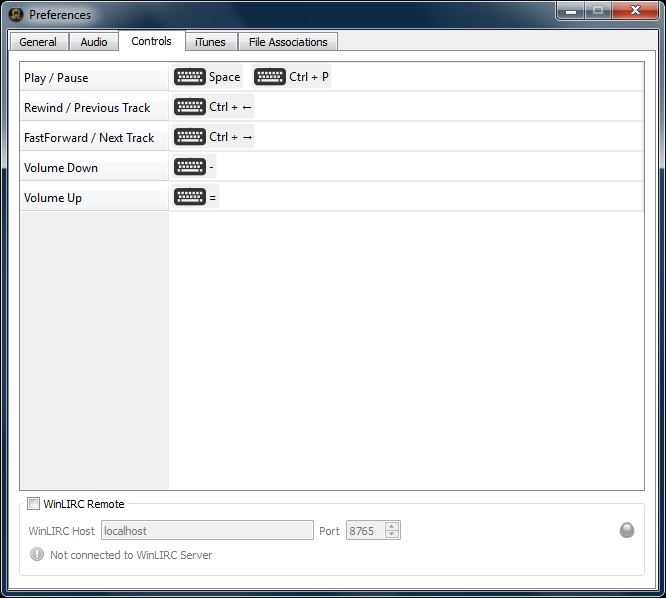

Control of playback can be customized such that
The Controls tab in the preferences window allows you to setup and configure both.
The table, shown in the Controls tab, shows each of the various commands that can be customized. Namely

Assigning a key to a command.
To assign a key to a given command double click the table cell for the given command and press the key (plus modifiers such as Ctrl or Alt) to assign to that command.
Removing an existing key assignment.
To remove an existing assignment double click the table cell for the given command. If more than one assignment has been made for the command Left and Right arrow buttons are shown allowing you to navigate to the command you wish to remove. Once selected press the "..." button on the right hand side of the cell to bring up a popup menu and choose Remove.
To remove all assignments for a command choose Clear All from the popup menu.
Playback can be controlled through the Apple Remote control. If your Apple computer has support for the Apple Remote control then you'll see "Enable control using Apple IR remote". Turn this on to allow playback control via Apple IR remote control.
Note that, unlike WinLIRC remotes, the button assignments for the Apple remote is fixed.
Both WinLIRC and LIRC are applications that communicate IR remote signals, received on a computer's IR receiver hardware, into notification messages that are broadcast on its hosted server. Black Omega can connect to this in order to receive these messages, and in turn be controlled using any given IR remote.
To enable connection to an WinLIRC server turn "WinLIRC Remote" on. Enter the computer host name or IP address along with the assigned port number (default is 8765) where the server is hosted. A message will be displayed showing if you've successfully connected or not.
To assign a command to a given remote key proceed exactly as in Assigning a key to a command with the exception that you press the button on the remote (as opposed to the keyboard).